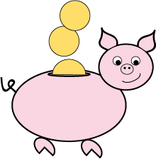

7 gode spare tips til at hjælpe med økonomien
På SU, har man som studerende umiddelbart ikke mange penge at gøre godt med, og det er ikke altid nemt, at få dem til at strække længst muligt. Jeg er som mange andre, helt ny i forhold til at leve på udeboende SU.
Jeg har dog allerede nu, fundet mange gode måder at spare penge hist og her. Disse måder vil jeg gerne dele med jer, så jeg har lavet nogle få sparertips, som kan hjælpe jer godt på vej.
1) En billig husleje.
Prøv så vidt som muligt, at få en lav boligudgift. I stedet for at bo alene, kan du flytte sammen med andre studerende. På den måde, kan du være heldig at huslejen ikke bliver så høj.
Sørg for at søge boligstøtte i god tid. Boligstøtten kan også hjælpe en lille smule på huslejen.
2) Spar penge på bøger.
I stedet for at købe alle bøgerne fra din pensumliste fra ny, kan du med fordel finde dem brugte online på pensum.dk
3) Handel ind én gang om ugen
Du kan med fordel forsøge, at handle ind én gang om ugen. Lav evt. en madplan med tilhørende indkøbsseddel søndag aften, som indeholder alt hvad du skal bruge hele ugen. Dette har hjulpet mig og mine to roomies, med at holde madbudgettet på det laveste.
4) Handel fornuftigt
Når du skal handle ind, så sørg for at kigge tilbudsaviserne igennem. Man kan virkelig spare mange penge på denne måde, i stedet for blot at gå ned i den lokale Super Brugs. Du kan med fordel bruge app’en Tilbudsugen, hvor man kan lave en indkøbsliste, og finde de varer du ønsker i forskellige tilbudsaviser, smart ikke?
App'en kan du finde på Tilbudsugens hjemmeside.
5) Store portioner er guld værd
Når du skal lave mad, så sørg nogle gange for, at lave store portioner. Ved at lave store portioner, har du evt. aftensmad til dagen efter, eller til en eventuel madpakke. Du kan med fordel også fryse mad ned, så du blot kan hive det op af fryseren og varme det.
6) Brug dit studiekort
Studiekortet er guds gave til studerende. Mange butikker og restauranter, tilbyder f.eks. 10% studierabat, ved fremvisning af studiekort. Dette er altså en god måde at spare penge på, når man endelig vil forkæle sig en smule.
7) Spar på el, vand og varme
Begynd at tænk over, hvor lange bade du tager. Selvom det måske er dejligt at stå en halv time under bruseren, kan man med fordel blot bruge 10 minutter. Samtidig skal du huske at slukke for lyset, i de rum du ikke benytter. Her sparer du også en del på elregningen.